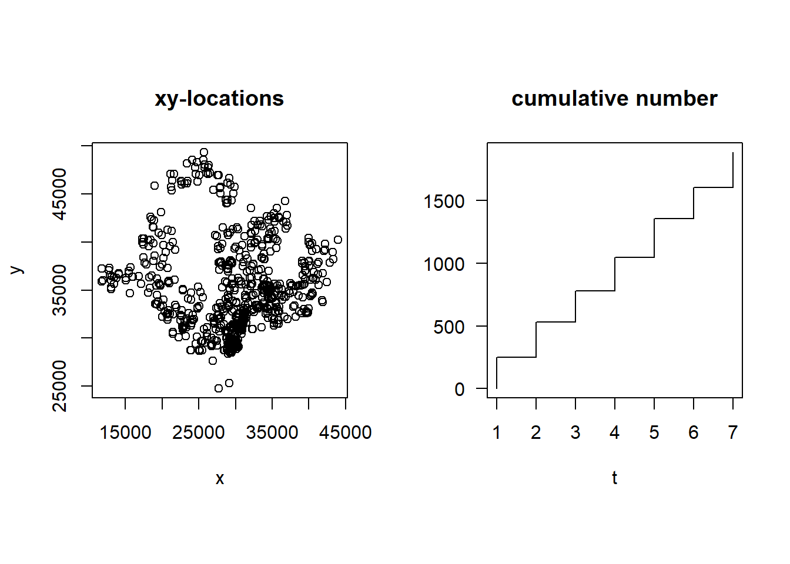
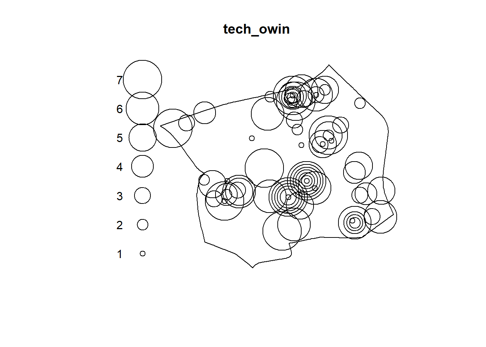
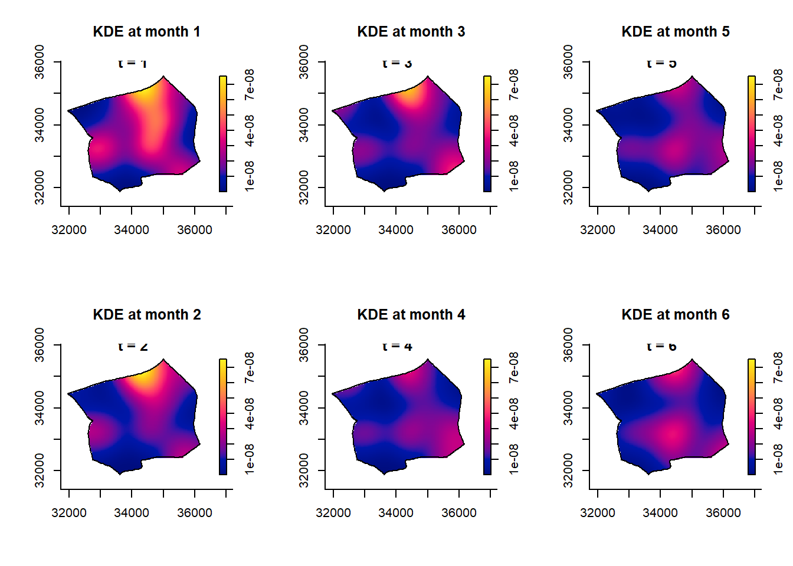
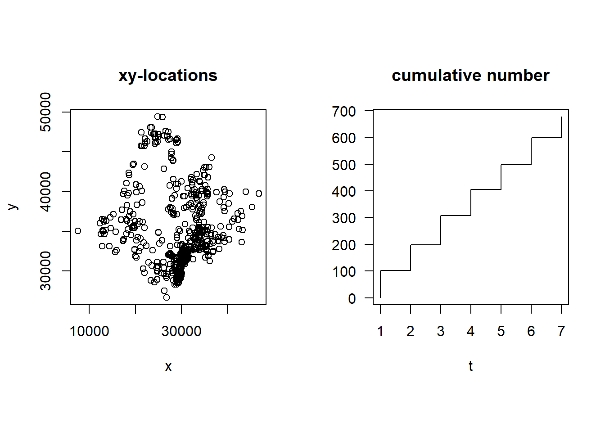
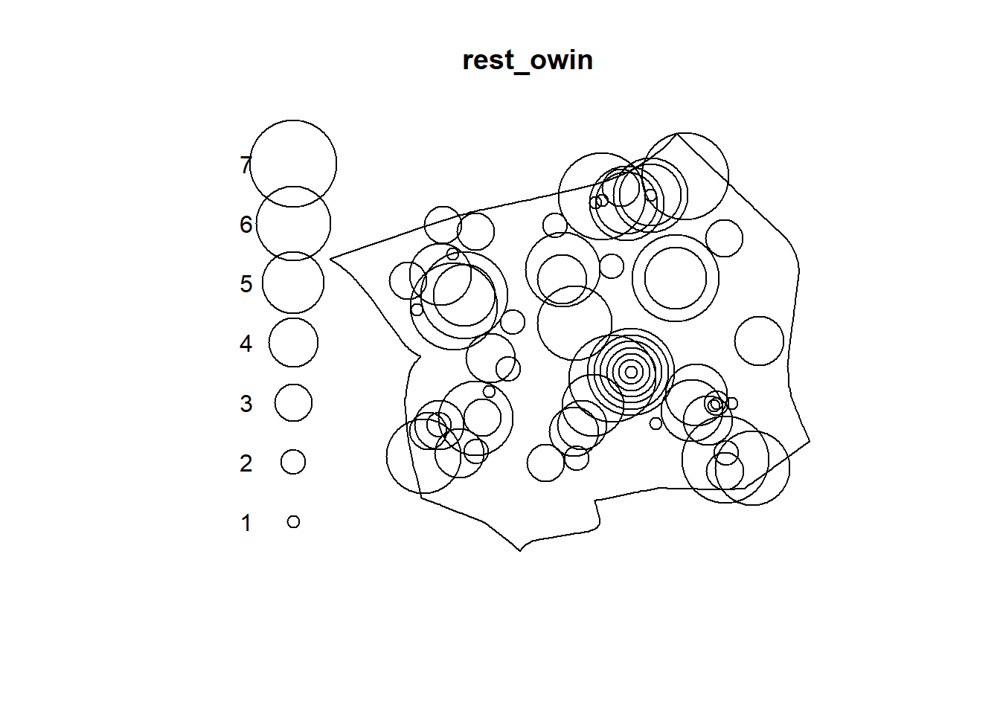
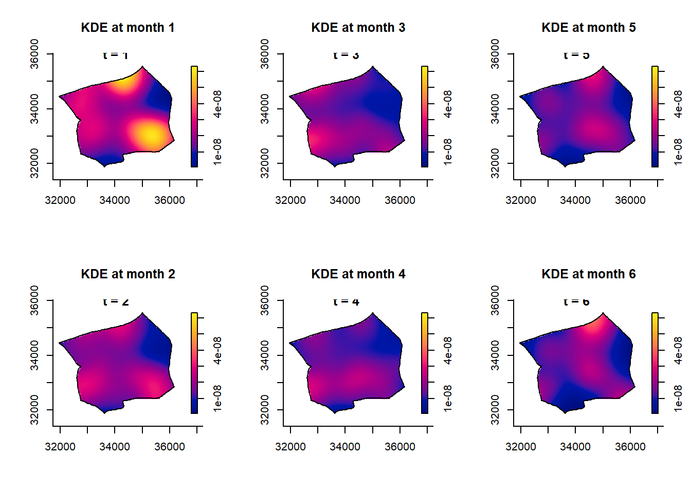
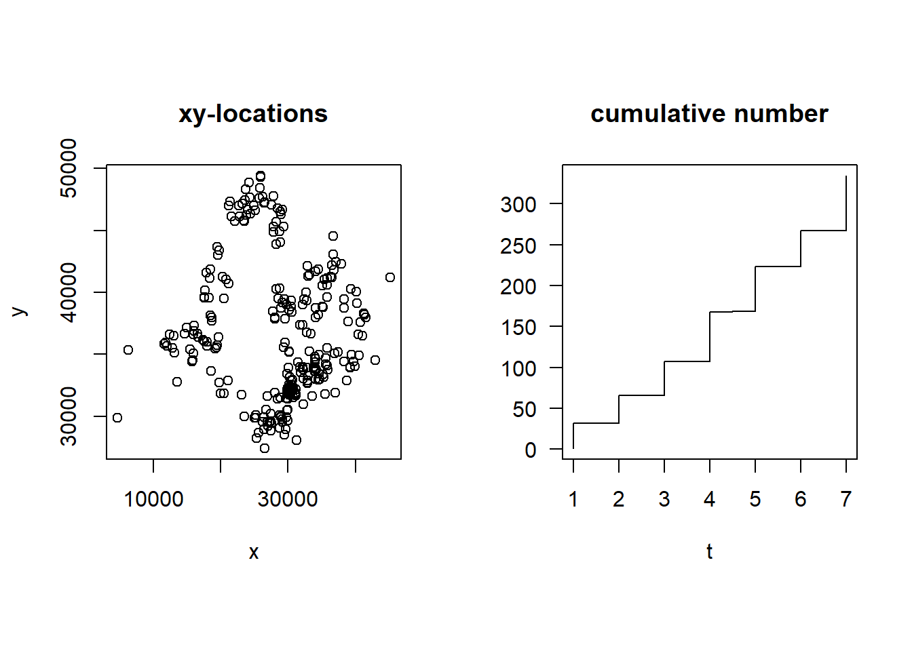
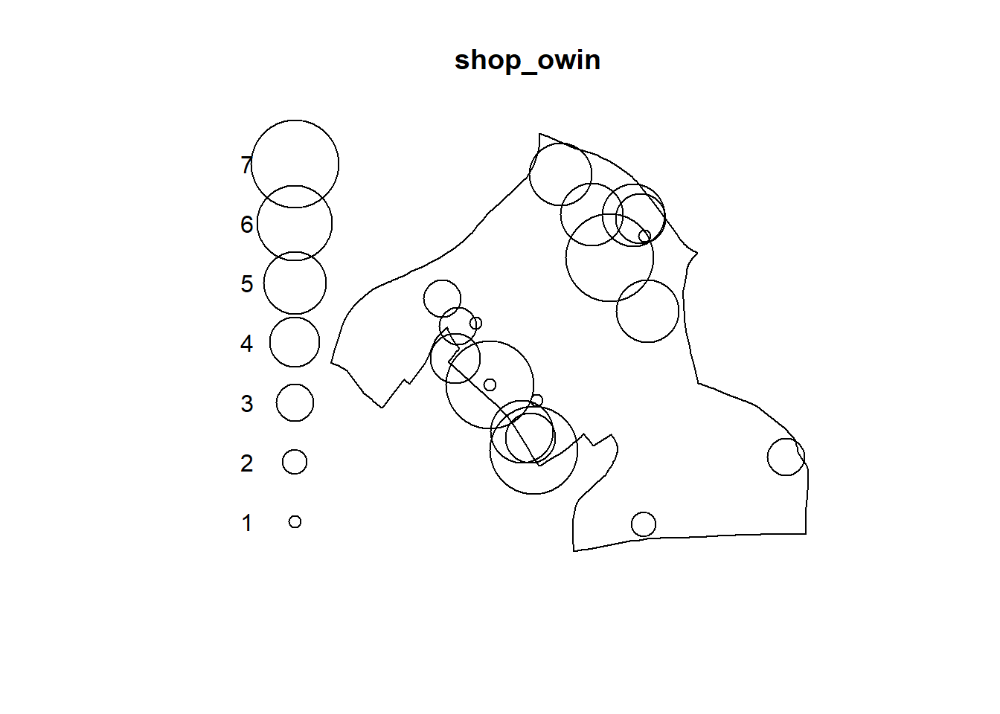
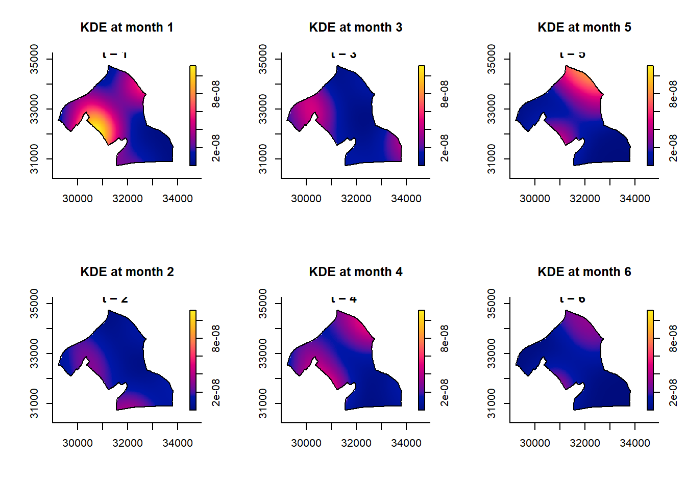

pacman::p_load(sf, spatstat, sparr,
tmap, stpp, tidyverse)Take-home Exercise 1b
Spatio-temporal Analysis
We’ll also check to see how the location of entities evolve over time using spatio-temporal analysis; if there’s any month of the year where there’s a high increase of entities clustering over time.
Import Libraries
Import Data
We’ll load the data from the RDS file we saved our sf objects into.
biz_56111_sf <- readRDS("data/biz_56111_sf.rds") # restaurants
biz_62011_sf <- readRDS("data/biz_62011_sf.rds") # tech
biz_47102_sf <- readRDS("data/biz_47102_sf.rds") # mini-market
map_load <- readRDS("data/bg.rds") #map of sgEntities that Develop Software and Apps
First, let’s retrieve the coordinate of the points of entities that develop app and software in matrix form
coords1 <- st_coordinates(biz_62011_sf)Next, we’ll create a new dataframe with x-coordinate, y-coordinate and time (by month).
tech_df <- data.frame(
x = coords1[, 1],
y = coords1[, 2],
t = biz_62011_sf$`MONTH_NUM`)Then we’ll create data in spatio-temporal point format to enable spatio-temporal analysis.
tech_stpp <- as.3dpoints(tech_df)But we must first make sure that the object is correctly created as spatio temporal format.
class(tech_stpp)[1] "stpp"plot(tech_stpp)
As can be seen from the graph that there is a steady increase of entities that develop software and app in Singapore that is spread out across the country, but much more concentrated on the central area (Marina, Raffles and Downtown).
We’ve already seen the growth of companies that develop app and software overall, so now we can deep dive into each month. We’ll specifically focus only on Geylang region as we’ve focused on analyzing Geylang for point pattern analysis.
tech_month <- biz_62011_sf %>%
select(MONTH_NUM)As done before we’ll filter for the data we want and then create ppp object (from the points) and combine them with the owin object (map of SG).
tech_month_ppp <- as.ppp(tech_month)
tech_month_pppMarked planar point pattern: 1882 points
marks are numeric, of storage type 'double'
window: rectangle = [11775.35, 43955.12] x [24744.89, 49327.11] unitsBut before combining both ppp object and owin object, we need to check for duplicate points.
any(duplicated(tech_month_ppp))[1] TRUESince there are duplicate points in the data, we’ll remove them.
tech_month_unique <- unique.ppp(tech_month_ppp)
npoints(tech_month_ppp)[1] 1882npoints(tech_month_unique)[1] 1031As before, we filter out other region and extract the points that are located in Geylang.
gl_tech <- map_load %>%
filter(PLN_AREA_N == "GEYLANG")map_sg <- as.owin(gl_tech)
class(map_sg)[1] "owin"tech_owin <- tech_month_unique[map_sg]
plot(tech_owin)
Next, we’ll compute STDKE to compute the intensity of points in 3D spac.
gl_tech_kde <- spattemp.density(tech_owin)
summary(gl_tech_kde)Spatiotemporal Kernel Density Estimate
Bandwidths
h = 437.27 (spatial)
lambda = 0.7195 (temporal)
No. of observations
78
Spatial bound
Type: polygonal
2D enclosure: [31942.4, 36167.34] x [31874.91, 35552.43]
Temporal bound
[1, 7]
Evaluation
128 x 128 x 7 trivariate lattice
Density range: [3.646928e-10, 7.544858e-08]After all the cleaning, there are 78 points over the span of 7 months (Jan - Jul).
tims <- c(1, 2, 3, 4, 5, 6)
par(mfcol=c(2,3))
for(i in tims){
plot(gl_tech_kde, i,
override.par=FALSE,
fix.range=TRUE)
title(main=paste("KDE at month",i))
}
Some observations of new entities located in Geylang:
- There are more companies registered on the first 3 months of 2025 and less companies registered from April to July
- It also seems that companies seem to prefer to choose to be located in the north, south and west of Geylang
Restaurants
Next, we’ll look at restaurant entities located is Singapore. We’ll use the same steps we took previously on data wrangling and compute STDKE.
coords2 <- st_coordinates(biz_56111_sf)rest_df <- data.frame(
x = coords2[, 1],
y = coords2[, 2],
t = biz_56111_sf$`MONTH_NUM`)rest_stpp <- as.3dpoints(rest_df)plot(rest_stpp)
There’s a steady growth of restaurants throughout the first 6 months of 2025 and surprisngly they are located very closely to each other.
rest_month <- biz_56111_sf %>%
select(MONTH_NUM)rest_month_ppp <- as.ppp(rest_month)
rest_month_pppMarked planar point pattern: 677 points
marks are numeric, of storage type 'double'
window: rectangle = [7514.99, 46829.34] x [26622.47, 49432.98] unitsany(duplicated(rest_month_ppp))[1] TRUErest_month_unique <- unique.ppp(rest_month_ppp)
npoints(rest_month_ppp)[1] 677# check for number fo points that are unique after duplicates are removed
npoints(rest_month_unique)[1] 625rest_owin <- rest_month_unique[map_sg]
plot(rest_owin)
Interestingly, there are entities that are choose to be located in almost similar location throughout 1st to 7th month (in the center of Geylang). To get a clearer view of this, let’s compute for the STDKE.
gl_rest_kde <- spattemp.density(rest_owin)
summary(gl_rest_kde)Spatiotemporal Kernel Density Estimate
Bandwidths
h = 460.7155 (spatial)
lambda = 0.8071 (temporal)
No. of observations
65
Spatial bound
Type: polygonal
2D enclosure: [31942.4, 36167.34] x [31874.91, 35552.43]
Temporal bound
[1, 7]
Evaluation
128 x 128 x 7 trivariate lattice
Density range: [8.27612e-10, 6.318179e-08]tims <- c(1, 2, 3, 4, 5, 6)
par(mfcol=c(2,3))
for(i in tims){
plot(gl_rest_kde, i,
override.par=FALSE,
fix.range=TRUE)
title(main=paste("KDE at month",i))
}
Similar to the tech entities, restaurants are clustered mostly at the north, west and south of Geylang. It seems that there were also more restaurants registered on January than on the other months of 2025. It could be that an influence between tech companies and also restaurants, but a further investigation is needed to confirm this.
Mini-market and Convenient Stores
Next, we’ll look at mini-markets and convenience store entities located is Singapore. We’ll use the same steps we took previously on data wrangling and compute STDKE.
coords3 <- st_coordinates(biz_47102_sf)shop_df <- data.frame(
x = coords3[, 1],
y = coords3[, 2],
t = biz_47102_sf$`MONTH_NUM`)shop_stpp <- as.3dpoints(shop_df)plot(shop_stpp)
As can be seen, convenience stores are located near to each other although they mostly are not located at the center of Singapore. The amount of shops registered also had gradual and steady growth per month. To understand better the pattern, let’s compute for the STDKE and visualize where registered convenience stores are located per month.
shop_month <- biz_47102_sf %>%
select(MONTH_NUM)shop_month_ppp <- as.ppp(shop_month)
shop_month_pppMarked planar point pattern: 334 points
marks are numeric, of storage type 'double'
window: rectangle = [4670.11, 45154.27] x [27393.65, 49401.78] unitsany(duplicated(shop_month_ppp))[1] TRUESince there are duplicated points, we’ll be removing duplicates and check how many points are not duplicates.
shop_month_unique <- unique.ppp(shop_month_ppp)
npoints(shop_month_ppp)[1] 334npoints(shop_month_unique)[1] 305Next, since we focused on Kallang for our point pattern analysis, we’ll also be analyzing Kallang instead.
kl_shop <- map_load %>%
filter(PLN_AREA_N == "KALLANG")map_kl <- as.owin(kl_shop)
class(map_kl)[1] "owin"shop_owin <- shop_month_unique[map_kl]
plot(shop_owin)
As can be seen, more mini-markets are registered on later months of 2025 instead of the early months of the year. It’s also interesting to note that they’re located not as near to each other. To confirm this finding, let’s compute its STDKE and visualize it per month.
kl_shop_kde <- spattemp.density(shop_owin)
summary(kl_shop_kde)Spatiotemporal Kernel Density Estimate
Bandwidths
h = 603.2527 (spatial)
lambda = 0.6833 (temporal)
No. of observations
19
Spatial bound
Type: polygonal
2D enclosure: [29224.85, 33809.38] x [30728.65, 34738.73]
Temporal bound
[1, 7]
Evaluation
128 x 128 x 7 trivariate lattice
Density range: [5.136912e-12, 1.113401e-07]There are only 19 observations and there 7 months of observation that we can see where convenience stores are located.
tims <- c(1, 2, 3, 4, 5, 6)
par(mfcol=c(2,3))
for(i in tims){
plot(kl_shop_kde, i,
override.par=FALSE,
fix.range=TRUE)
title(main=paste("KDE at month",i))
}
Interestingly, more convenience stores opened on January and March than other months and they are mostly located on the north east and west side of Kallang.